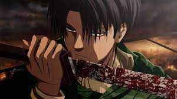
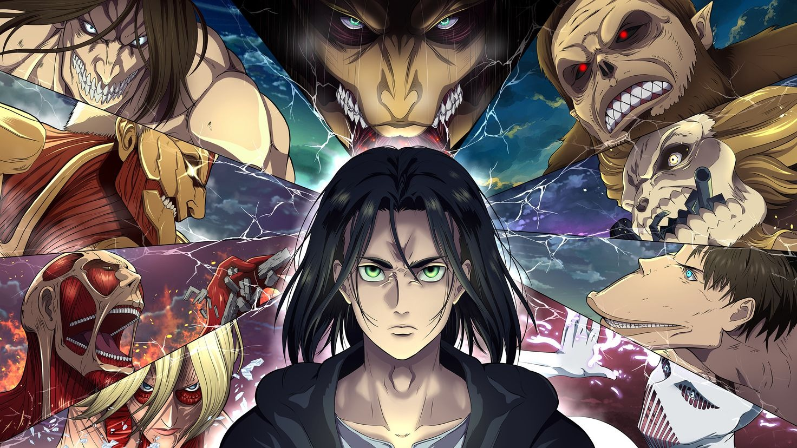
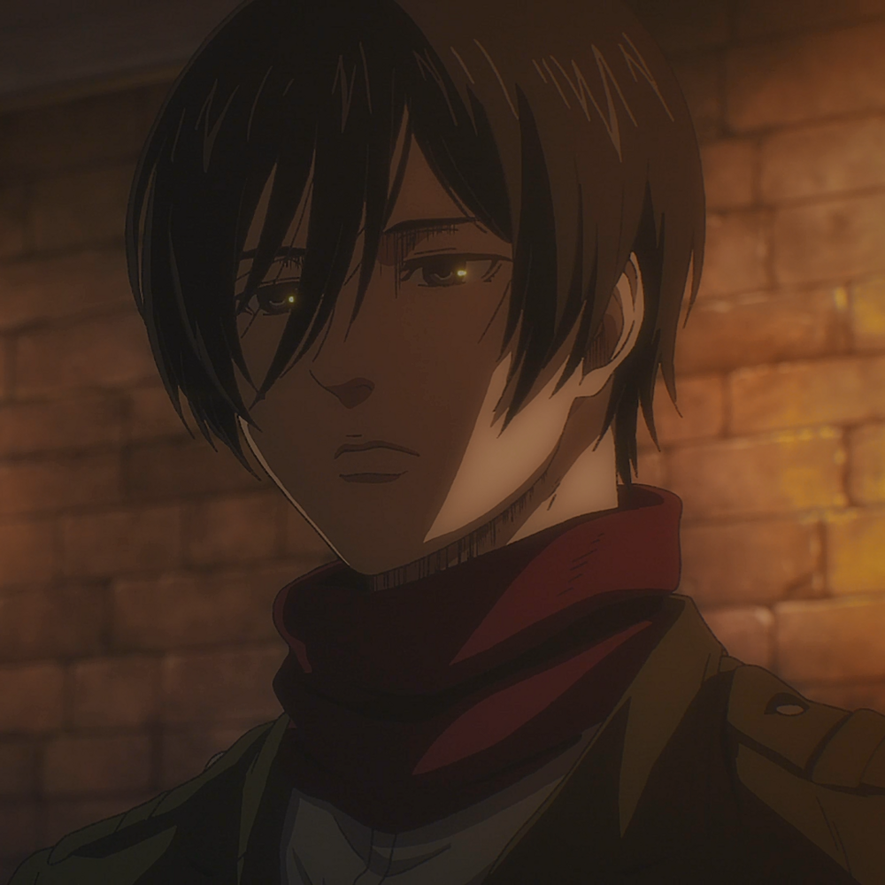
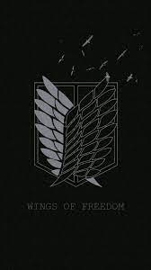

ATTACK ON TITAN
Capitulos Finales
El Retumbar
Los Infractores
Lucha en Sueños
Un Sueño Muy Largo
Hacia el Arbol en la Colonia
Pesonajes que Extrañamos :(
Eren Jaeger
Ymir
Zeke Jaeger
Hange Zoe
Erwin Smith
Bertolt Hoover
Carla Jaeger
PORTADA FINAL SESON

Capitan Levi Ackerman
Levi Ackerman (リヴァイ・アッカーマン Rivai Akkāman?), también referido como Capitán Levi (リヴァイ兵長 Rivai Heichō?), es el capitán de escuadrón (兵士長 Heishichō?, literalmente "líder de los soldados") del escuadrón de operaciones especiales del Cuerpo de Exploración, y es conocido como "el soldado más fuerte de la humanidad".
PEQUEÑO RESUMEN DE LO QUE NOS ESPERA EN EL FINAL
Una historia compleja, que no resulta nada sencilla de seguir para muchos espectadores, y es que llevamos más de una década con la obra de Hajime Isayama, y esta ha ido evolucionando y siendo con el paso del tiempo cada vez más compleja. A continuación, un resumen, situándonos en el tramo final de la serie, de todo lo que necesitas saber para llegar en la mejor de las formas al último episodio. Eldia y Marley, nacionales rivales y siglos de enfrentamientos que han terminado resolviéndose de la forma más contundente posible: un genocidio masivo que no deja absolutamente nada tras de sí, y en el que todos los pueblos y ciudadanos del mundo sufren las consecuencias de un conflicto milenario. Los ciudadanos de la isla Paradis vivían en la ignorancia más absoluta debido al poder del Titán Fundador, pero Grisha Jaeger, el padre de Eren, se lo arrebató a la familia Reiss, logrando ser el primero fuera de la estirpe real en lograrlo, un hecho que se nos acabaría revelando formaba parte del plan de Eren y el poder del Titán de Ataque, clave para dar paso al temido retumbar.
ESTE SABADO 4 DE NOBIEMBRE SALDRA EL ULTIMO CAPITULO Y ALFIN DESPUES DE 10 AÑOS VEREMOS EL FINAL
MIKASA
Mikasa Ackerman (ミカサ・アッカーマン Mikasa Akkāman?) es la hermana adoptiva de Eren Jaeger. Le debe mucho a él, desde que la salvó de los secuestradores que pretendían convertirla en esclava, y pasa la mayor parte de su tiempo juntos. Así pues, aunque a veces no esté de acuerdo con lo que hace, pero lo protege de cualquiera que trate de hacerle daño. Ella, junto con Armin, se une al Cuerpo de Exploración para ayudar a Eren a retomar la Muralla María. La consideran un genio militar y fue la primera de su clase
EQUIPAMIENTO DE LA LEGION DE EXPLORACION
Equopo de Maniaobras Tridimencional
Lanzas Relampagos
Cañones de Aire
Titanes
Rifles
ESCUDO DE LA LEGION DE EXPLORACION
simbolizan la protección de este equipo sobre la humanidad.
